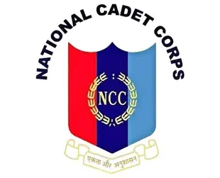
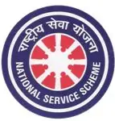

Build unshakeable leadership, absolute confidence, and military-grade discipline.
Earn 'B' & 'C' certificates, get defense career preferences, and personal grooming.
National camps, institutional firing practices, ceremonial parades, and adventurous trekking.

Develop a deep sense of selfless social service, appreciate rural community needs, and cultivate democratic leadership.
Annual blood donation camps, disaster relief management, and cleanliness drives under Swachh Bharat.
Develop empathetic teamwork, dynamic communication skills, and lifelong volunteer ethics.